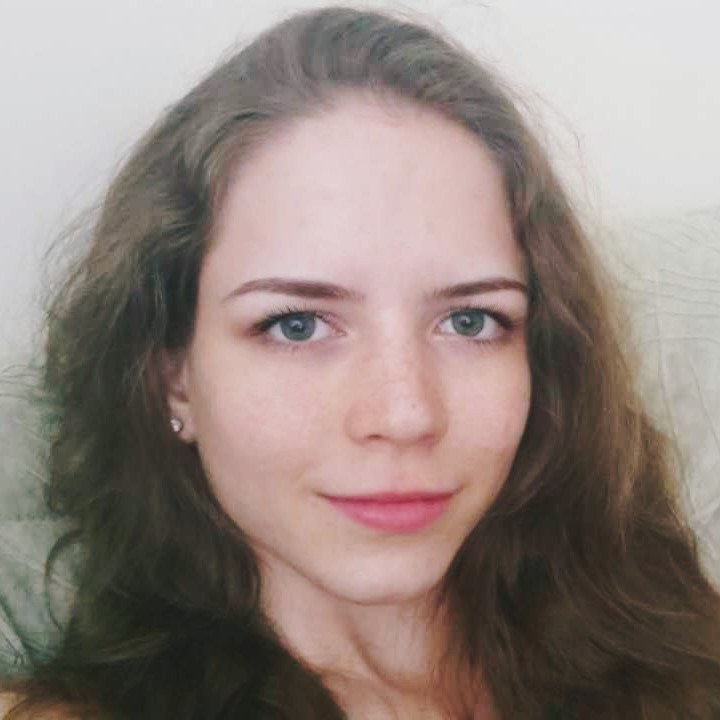

|  |
Телефон: 0893 123 456 email: eli.zlatkova@abv.bg |
| Умения и качества: | |
| индивидуална и групова работа с ученици от 2 до 12 клас работа със студенти управление на времето организираност в работния процес приоритетизационни умения комуникативни умения работа в екип внимание към детайла дигитални умения |
|
| Образование и квалификации: | |
| 2018-2023 | СУ „Св. Климент Охридски“, Факултет по математика и информатика, София, България специалност: математика и информатика |
| 2012-2017 | 133 СОУ „А. С. Пушкин“, София, България профил: френски, руски и математика |
| Професионален опит: | |
| 2022-сега | Фондация Материка Учител по математика |
| 2018-2019 | Софийски университет, ФМИ Асистент по Линейна алгебра и аналитична геометрия |
| Езици и допълнителни умения: | |
| Английски език: B1 Френски език: B1 Руски език: B1 Познания по Python Познания по Java Познания по Java script Познания по Бази данни Microsoft Office Познания по обработка на снимки и видеоклипове |
|
| Интереси и активности: | |
| Спорт, Танци, Йога, Рисуване | |
| Лична информация: | |
| Статус: Неомъжена Националност: Българка Правоспособност на МПС: Категория B |